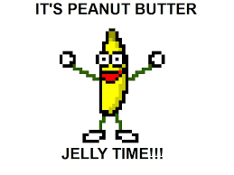

Peanut Butta Jelly

The best thing to happen to the world since sliced bread.
The Peanut Butta and Jelly sammich.
Ingredients
- Peanut Butta (Creamy no nuts or else)
- Jelly (Except it has to be Jam/and Grape flavoured)
- Bread (only allowed to use Hawaiian Sweet bread)
Preperation
- Take you're new load of Hawaiian Sweet bread that I made you buy for this recipe and throw it in the fridge.
Steps
- Remove the two middle slices of bread from you're nice cold bread
- With a butter knife of you're choice, slather one piece of bread with peanut butter.
- Now with a new clean butter knife, slather the other piece with jelly. (Jam)
- (Make sure to have a nice even spread.)
- Slap one piece of you're nicely spread peanut butter or jelly (JAM) onto the other.
And presto. The perfect Peanut Butta and Jelly